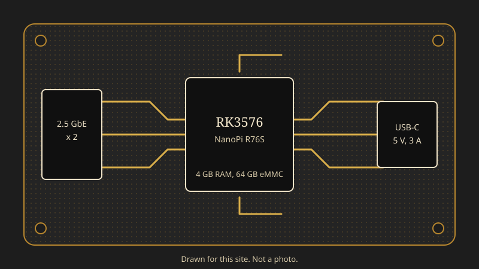

Argus sub-projectEnded 2026
In-store AI board
A small box for in-store AI devices, built around the NanoPi R76S.
- No public link.

Some stores have no computer to run the agent.
The Argus streaming agent runs on a Windows computer the store already has. Some stores have no back-office computer at all, so there was nowhere to run it.
A small Linux box on the store’s router.
The answer was a small board that plugs into a spare port on the store’s router and runs the whole agent with no screen: cameras, recorder, till, uploads and updates. The AI detection still happens in the cloud, so the box itself stays small.
The pick was the FriendlyElec NanoPi R76S because nothing thumb-sized had two network ports and built-in storage. A $485 mini PC and an $810 edge box were ruled out on cost.
How it works
Build
Every agent build also makes an arm64 package for the box, and the build checks that the program really is arm64.
Install
Unpack the package and run one installer. It runs a self-test first and changes nothing if the test fails.
Run
The agent runs as a system service that restarts itself. Each box’s settings and state sit in one place.
Update
The box asks the server for an update built for arm64. A box is never given the Windows or x86 build. A release with no arm64 build means no update.
Roll back
Before every start a check runs. A new build that fails its self-test, or is started 3 times without staying up for 15 minutes, is swapped for the last good one and blocked for 24 hours.
The hardware
| Board | FriendlyElec NanoPi R76S, 4 GB RAM and 64 GB eMMC, in its metal case. RK3576 chip, two 2.5 gigabit ports. |
|---|---|
| Power | 5 V, 3 A USB-C supply. The network cable carries no power. |
| Cost | About $150 for the board, case and power supply from one retailer. |
| Avoid | The 3 GB version has no built-in storage. The bare-board versions come with no case or power supply. |
Where it stands. This was tabled in 2026 before any box was bought, so it never ran on real hardware. Install, update and rollback were tested in automated builds only. A direct link to one kind of register was estimated and not built. What this page shows was designed, not a field result.
What I owned
- Designed a custom circuit board around the NanoPi R76S for the in-store AI devices.
- Compared the options and picked the board.
What I learned
Hardware decisions are mostly about what you can buy and ship quickly. Power, ports and storage ruled out most options before performance mattered.
A box nobody can visit needs a way back from a bad update, which is why it rolls itself back to the last good build.